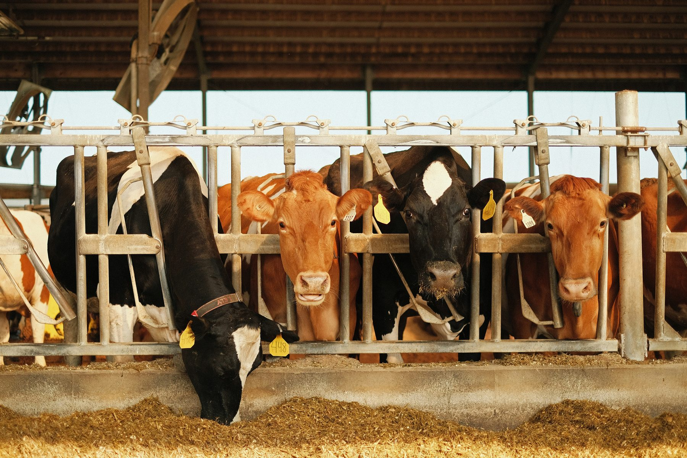
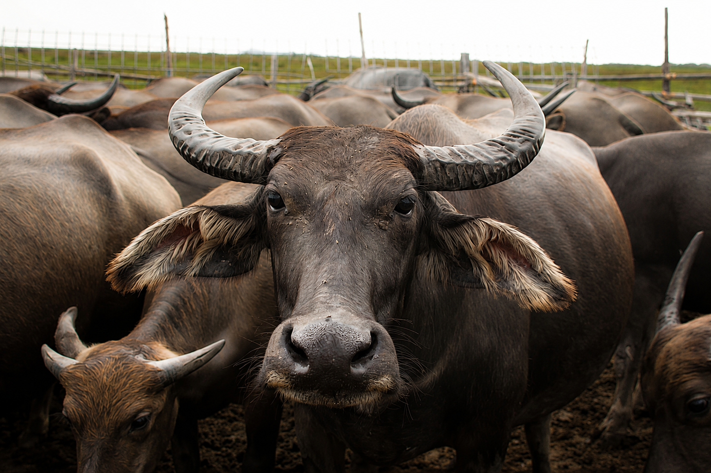

A 15-acre dairy farm and research plant, built for the Indian countryside.
Our agriculture vertical starts on the ground — a working dairy farm of over 200 cows and buffaloes, spread across 15 acres, developed with government-assisted infrastructure programs. Software and precision farming pilots build on top of this base.

A real herd, on real ground — not a pilot on paper.
The farm runs across 15 acres and is home to more than 200 animals — a mixed herd of cows and buffaloes — supporting daily milking, breeding and fodder cultivation on-site. It's the physical foundation XDairy and our farm-tech pilots are built to serve.
Cows and buffaloes, managed as one integrated herd.
Both species are housed, fed and milked on-site, giving us a full-fat and full-SNF product mix from a single farm.
Cows
Cross-bred and Holstein-Friesian cows form the larger share of the herd, chosen for consistent daily yield and ease of veterinary management.
- Twice-daily machine milking
- Individual health and yield records
- Structured calving and breeding cycle
Buffaloes
Murrah and Murrah-cross buffaloes round out the herd, prized for higher fat content and their suitability to local feed and climate conditions.
- Higher fat and SNF milk output
- Dedicated housing and wallow access
- Bred under our indigenous-breed program
Built for scale, hygiene and animal welfare.
Every part of the plant — from milking to chilling to record-keeping — is designed to run as one connected operation.
Milking Parlour
A modern milking parlour handling twice-daily collection across the herd with consistent hygiene protocols.
Cattle Housing & Welfare
Ventilated, sanitation-first housing separated by species and life stage, with dedicated calving and calf-rearing zones.
Fodder & Nutrition Unit
On-site fodder cultivation and a balanced feed-ration program tailored separately for cows and buffaloes.
Veterinary & AI Care
Routine veterinary checks, disease-control protocols and artificial-insemination services keep the herd healthy and productive.
Milk Chilling & Quality Lab
On-site chilling and a quality lab that checks fat, SNF and adulteration before milk leaves the farm — feeding directly into XDairy.
Research & Training Block
A dedicated block within the 15 acres for fodder trials, breed-improvement work, and hands-on farmer training.

15 acres, one research plant.
Alongside day-to-day dairy operations, part of the 15-acre site is set aside as a research plant — used for fodder-agronomy trials, breed-improvement work aligned with national genetic-upgradation goals, and structured training for partner farmers. This is where our farm-tech pilots and future agriculture programs will be tested before they scale.
Built alongside central dairy development schemes.
Our farm and research plant are planned to align with, and draw support from, central government programs for the dairy sector.
Rashtriya Gokul Mission (RGM)
Supports genetic upgradation and scientific breeding of indigenous and cross-bred cattle to improve milk yield and productivity.
National Programme for Dairy Development (NPDD)
Strengthens village-level milk procurement, quality-testing and processing infrastructure, and funds farmer training in hygienic milk production.
Animal Husbandry Infrastructure Development Fund (AHIDF)
Incentivises private investment in dairy processing, chilling and value-addition infrastructure, with interest subvention for eligible borrowers.
National Livestock Mission (NLM)
Supports entrepreneurship in cattle and buffalo farming, including capital subsidy for setting up dairy farm infrastructure.
Scheme names, funding and eligibility are set by the Government of India and its departments, and are revised periodically — we plan our infrastructure against current guidelines at the time of application.